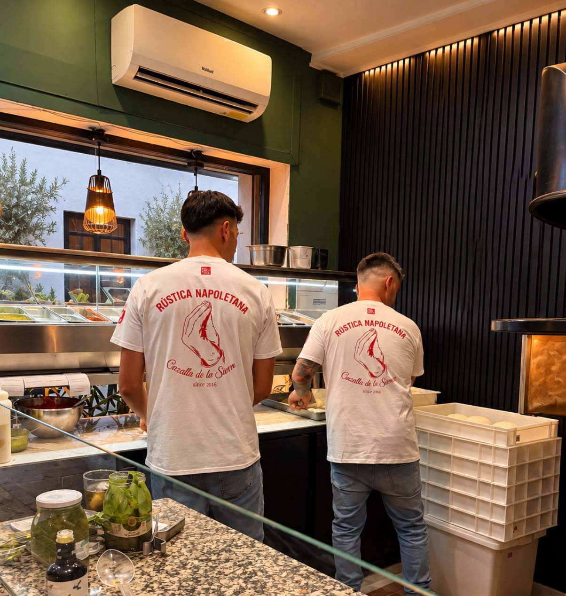

Rústica Napoletana ya forma parte de la Guía Repsol 2026. Recibimos la noticia como un reconocimiento a un trabajo construido durante años en Cazalla de la Sierra.
Un camino hecho a fuego lento
Detrás de este paso hay una forma concreta de trabajar: horno de leña, ingredientes traídos de Italia y una masa elaborada artesanalmente. No es una fórmula rápida. La masa descansa entre 48 y 72 horas para desarrollar el sabor y la digestibilidad que buscamos en cada pizza.
El tomate San Marzano, la mozzarella fior di latte, la burrata y los embutidos italianos forman parte de una propuesta que une la tradición napolitana con ingredientes y referencias de la Sierra Norte de Sevilla.
Italia aporta la tradición; Cazalla de la Sierra le da carácter a nuestra manera de hacer pizza.
Un reconocimiento al trabajo diario
Entrar en la Guía Repsol 2026 pone el foco en una trayectoria que se sostiene servicio a servicio: cuidar la fermentación, controlar el punto exacto del horno y mantener la regularidad de cada elaboración.
Es también un reconocimiento compartido por el equipo de Rústica Napoletana. Desde la preparación de la masa hasta el momento en que la pizza llega a la mesa, cada parte del proceso cuenta.

Seguir haciendo lo mismo, cada vez mejor
Este reconocimiento no cambia el punto de partida: seguimos trabajando desde Cazalla de la Sierra con la misma atención a la masa, al producto y al fuego. Sí nos da un impulso para continuar mejorando y para compartir nuestra forma de entender la pizza napolitana con más personas.
La mejor manera de conocer ese trabajo sigue siendo la más sencilla: sentarse a la mesa y probar una pizza recién salida del horno.